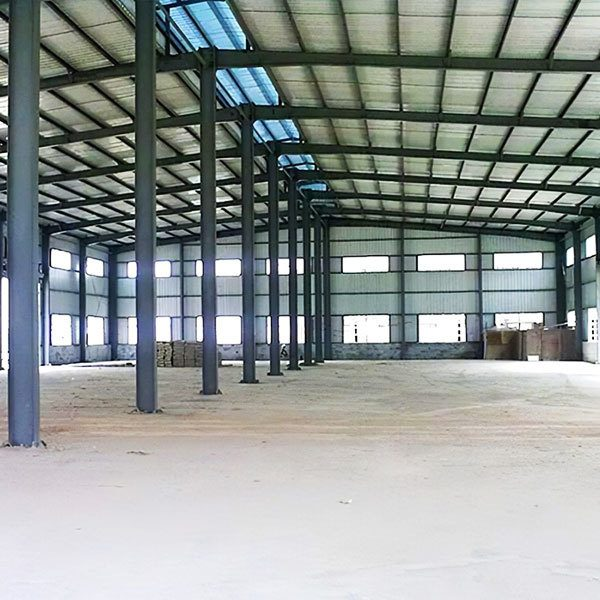
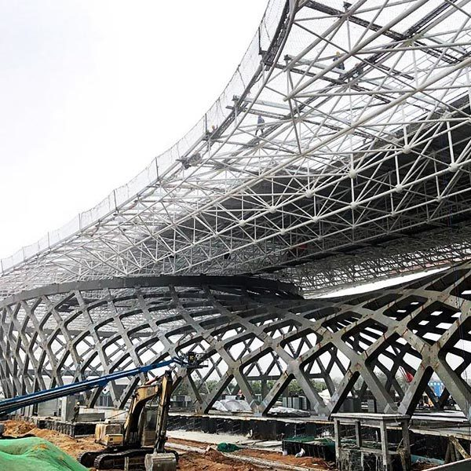
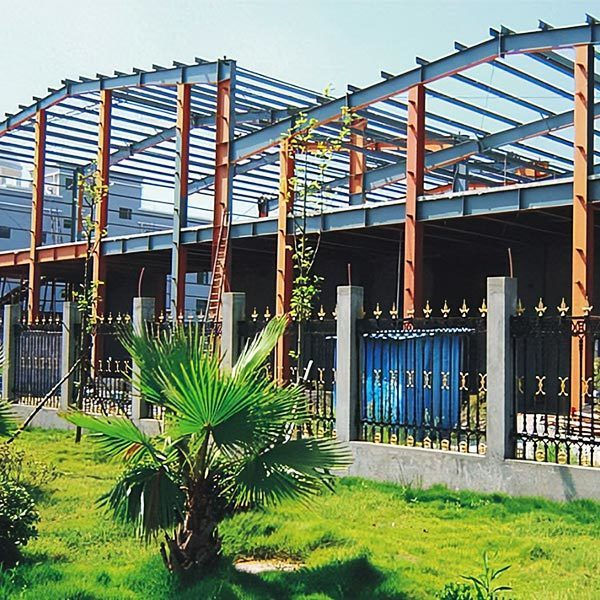
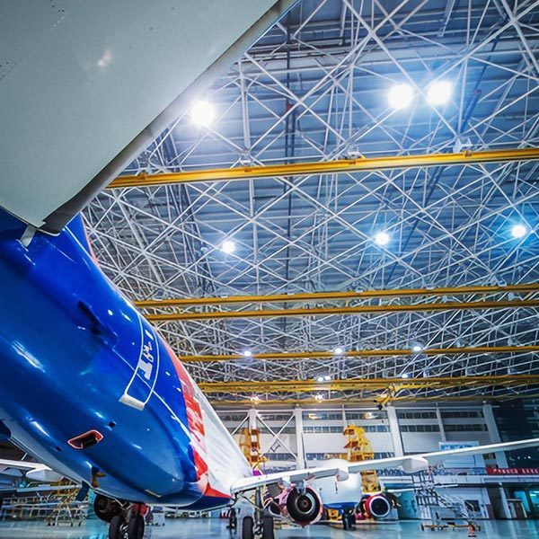
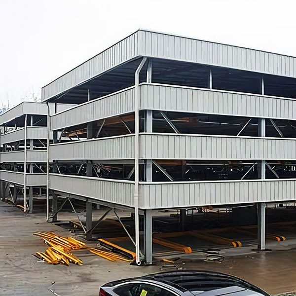
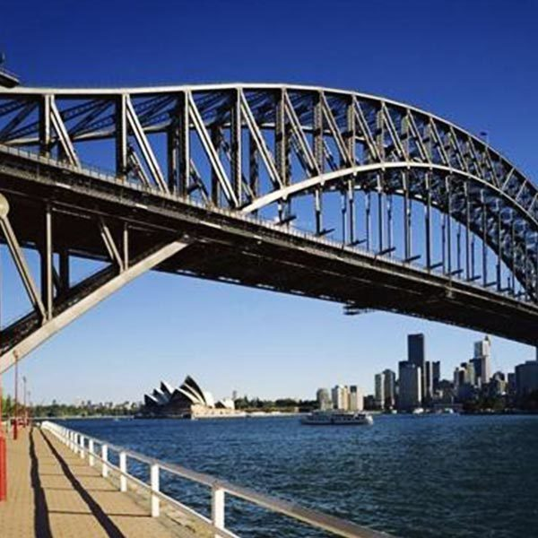
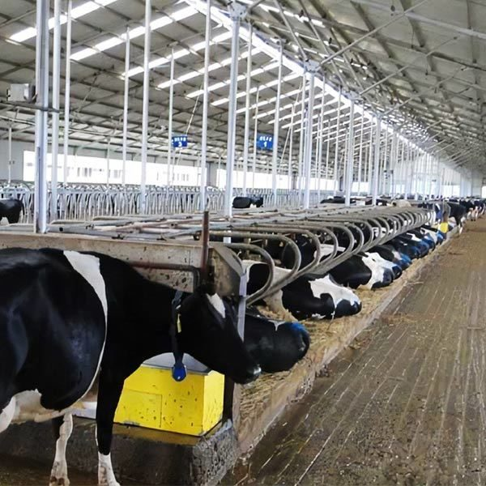
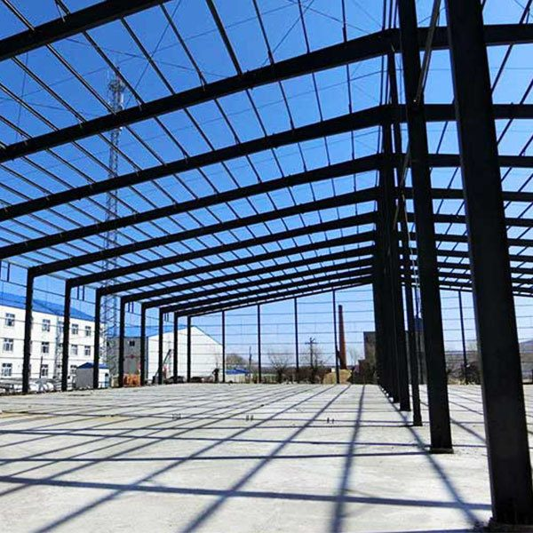
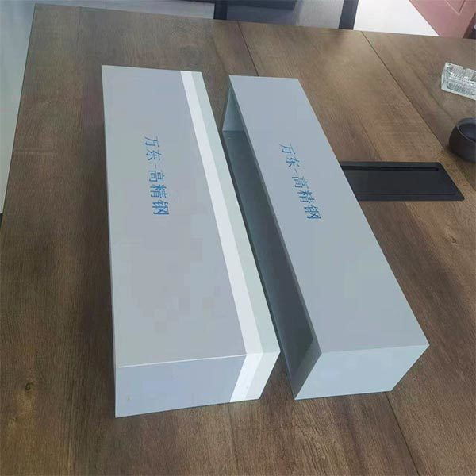

Заводские здания
Лёгкий стальной каркас из H-, Z- и U-образных компонентов. Компактный вес, короткие сроки монтажа.

Лёгкий стальной каркас из H-, Z- и U-образных компонентов. Компактный вес, короткие сроки монтажа.

Большепролётные складские корпуса без промежуточных опор.

Сталь высокого качества формуется практически под любой пролёт — трибуны от сотен до тысяч мест.

Многоэтажное строительство на стальном каркасе.

Конструкции с широкими проёмами под авиационную и специальную технику.

Гаражные комплексы и техцентры из стальных конструкций.

Пролётные строения пешеходных и автомобильных мостов.

Фермы и производственные корпуса для сельского хозяйства.

Изготовление по чертежам заказчика: любые виды, спецификации и материалы.

Сварные коробчатые колонны, крестовые колонны, подкрановые балки для промышленных зданий.

Точные профили: T-, Y-образные, крестовые, треугольные, прямоугольные трубные и специальные сечения по чертежам.

H-балки, лист и полный сортамент готового проката. Экономия стали 15–30% по сравнению с двутавровыми балками.
| Параметр | Значение |
|---|---|
| Производственные площади | 40 000 м² |
| Лазерный раскрой | комплекс 20 кВт, трёхмерная лазерная резка |
| Сварка | двухдуговая двухпроволочная под флюсом, сварочные роботы |
| Обработка поверхности | дробеструйная установка 2000×2500 мм, автоматическая окраска |
| Прессовое оборудование | 500 т |
| Сертификация | ISO 9001, ISO 45001, ISO 14001 |